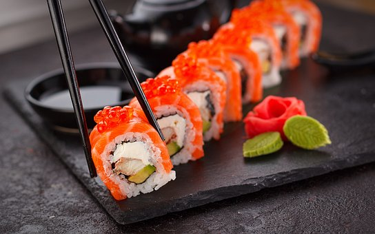

Biryani
Biryani is a popular rice-based dish that originated in the Indian subcontinent but is now enjoyed in many parts of the world. It is a flavorful and aromatic dish that typically consists of long-grain rice, meat (such as chicken, lamb, or beef), and a blend of spices and herbs. The meat and rice are usually cooked separately, then layered together and cooked again, allowing the flavors to meld together.
Biryani Recipe
Pizza
Pizza is a beloved dish that originated in Italy but has become popular all over the world. It is a flatbread that is topped with tomato sauce, cheese, and a variety of other toppings, such as meats, vegetables, and herbs. Pizza can be made in a variety of styles, including thin crust, deep dish, and Neapolitan. It is usually baked in a hot oven and is a great dish to share with friends and family.
Pizza Recipe
Sushi
Sushi is a traditional Japanese dish that consists of vinegar rice and various fillings, such as raw fish, vegetables, and seafood. It is often served with soy sauce, wasabi, and pickled ginger. Sushi can be prepared in many ways, including rolls, nigiri, and sashimi. It is a healthy and flavorful dish that is perfect for a light lunch or a special occasion.
Sushi Recipe